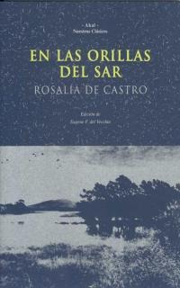

Obra de Rosalía de Castro
La flor
 Os poemas que conforman este volume, escritos en castelán, foron publicados cando a autora apenas cumprira vinte anos e retratan as diferentes formas que asume o amor, desde unha perspectiva melancólica e solitaria, un punto de vista máis próximo ao romanticismo tardío que invadiu as letras españolas na segunda metade do século XIX.
Os poemas que conforman este volume, escritos en castelán, foron publicados cando a autora apenas cumprira vinte anos e retratan as diferentes formas que asume o amor, desde unha perspectiva melancólica e solitaria, un punto de vista máis próximo ao romanticismo tardío que invadiu as letras españolas na segunda metade do século XIX.
¡Cuando infeliz me contemplé perdida y el árbol de mi fe se desgajó, tuvieron, ¡ay!, para llorar mis ojos de amargura y de hiel tristes despojos!
Cantares Gallegos
Cantares galegos é un poemario que consta de 37 poemas escrito en lingua galega que viu a luz o 17 de maio de 1863, data que se toma como referencia para celebrar o Día das Letras Galegas. A obra, moi influenciada polas cantigas galegas, enxalza a beleza da súa terra natal xa desde o prólogo. En leste fai unha alegación reivindicativo de Galicia e as súas xentes, ao mesmo tempo que deixa clara a súa intención de eliminar do imaxinario popular a visión denigratoria que se ten do galego, especialmente da súa lingua. Este título é un punto de inflexión para o Rexurdimento, pois conseguiu dignificar a lingua e a cultura do seu pobo, poñendo tamén en valor a vida campesiña e a beleza no rural.
Follas Novas
Poemario publicado en lingua galega en 1880, trátase dunha obra de corte intimista na que se percibe a faceta máis melancólica da autora. O título aborda a temática da emigración do pobo galego vista desde a perspectiva feminina. Tamén denuncia nos seus versos a marxinación que sufriron os orfos e os campesiños, especialmente aqueles que debido á fame e a pobreza víronse na obrigación de emigrar a outros lugares en busca dunha vida mellor.
A mi madre
A mi madre é unha colección de poemas sentimentais e próximos que Rosalía de Castro dedica á súa nai pouco despois da súa morte. As súas poesías mostran unha gran profundidade e un amor intenso cara á figura materna, ademáis do sentimento de soedade e vacío no seu corazón. Unha oda á súa persoa que se converteu nunha das primeiras coleccións de poesía da autora.
Yo tuve una dulce madre, concediéramela el cielo, más tierna que la ternura, más ángel que mi ángel bueno. (O. C. I, p. 469)
En las orillas del Sar
É unha recompilación poética escrita orixinalmente en castelán. Leste foi o último título que publicou e nel pódese ver a evolución lírica da autora. Cada un dos 53 poemas que compoñen o libro está centrado nun sentimento diferente, predominando en todos eles o ton pesimista tan característico da pluma de Rosalía. Arriscado a nivel formal —fai uso dunha métrica pouco convencional que se afasta do estilo poético tradicional—, explora o seu mundo interior e trata temas recorrentes da súa obra como a soidade e a morte, todo iso enmarcado na natureza e realidade da súa Galicia natal.